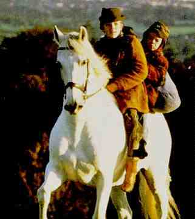
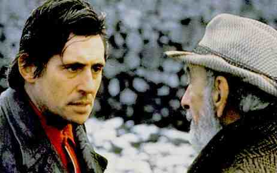

Into the West A, B+ GB/1993/Color/Fullscreen 1.33:1/Stereo Surround/97 minutes/Directed by Mike Newell/Starring Gabriel Byrne, Ruaidhri Conroy/Touchstone Home Video/15 Chaps/CLV/$39.99 This is a gem of a movie! It's a bubbling cauldron of screen elements that mix into a magic potion of a movie. It's got a pinch of grandfather, a strong dose of drunken father to be redeemed, a great white horse  conjured from the Irish sea, more than three parts of menace, and two young boys that supply a measure of congealing charm that binds the entire brew into a wonderful cinema experience.Jim Sheridan(My Left Foot, The Field, In the Name of the Father) has written a beautiful screenplay. Mike Newell(Enchanted April)directs with a sensitive hand, eliciting performances from the two young leads that reflect the innocence and strength of belief in justice and magic. This is truly wonderful, fireside, storytelling. Gabriel Byrne plays Pappa, an Irish "traveler"(A gypsy-like sect of Irish road people)who's descended into booze and the ghetto with his two children. When a grand wild white stallion is brought to the city by their grandfather, the two boys are gifted the magnificent beast by the old "traveler." The horse sets in motion a chase through the countryside as the boys are maneuvered into the position of fugitives by crooked police and a greedy horse owner. The grand adventure provides a measure of humor in the chase and delight as the boys manage to outwit the authorities. The pure, white stallion ultimately provides the redemption that brings the family back to the beauty of their roots.  The dirt and desperation of the ghetto is artfully contrasted with the breathtaking beauty of the countryside. The photography captures the extremes of the tale perfectly. The fire lit night scenes glow with the color of the flames. The lighting effectively embellishes the magic of the tale. Tom Sigil's work behind the camera is exemplary. Patrick Doyle has written an exquisite score that elegantly carries the strain of magic from scene to scene. Working alongside unaffected child actors is often a challenge that has intimidated many a screen veteran . Gabriel Byrne is comfortably up to the chore. He captures the surly desperation of a strong man lost perfectly. Ellen Barkin(Byrne's off screen spouse)is very good in a small role a traveler lady with eyes for Pappa. Director Newell guides his actors through uniformly fine performances. The disc captures the subtle flicker of the varying ambient light without breaking apart into mushy graininess. The night scenes look just great. The surround sound, while not overly ambitious, creates an accomplished feeling of place, and the music is simply beautiful. This is a film that can be shared with the entire family. While some of the action may be frightening for very young children, the harsh realities of the story are certainly not too graphic. Don't miss the opportunity to let the magic of Into the West into your heart. |